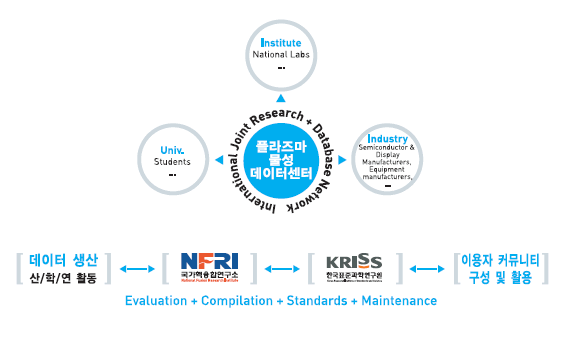

플라즈마 물성 참조표준
- 플라즈마 내에서 일어나는 입자(전자, 원자, 이온, 분자 등)들의 충돌에 따른 데이터
- 플라즈마 이해를 위한 필수 정보
- 플라즈마 발생 장치 설계 및 제어의 Key Parameter
- 플라즈마 공정조건 확립을 위한 필수 정보

참조표준과 참조데이터
- 국가 사회의 모든 분야에서 사용되고 있는 과학기술 데이터나 정보에 대하여 그 정확도와 신뢰도를 분석 평가함으로써 얻어지는 자료로 기술혁신과 산업발전의 원동력
- 참조표준 제정 및 보급에 관한 운영요령(산업자원부 고시 제2006-86호)에 참조표준의 정의와 분류 및 평가기준을 명시
- 참조표준
- 측정데이터 및 정보의 정확도와 신뢰도를 과학적으로 분석, 평가하여 공인함으로써 국가 사회의 모든 분야에서 널리 지속적으로 사용되거나 반복사용이 가능하도록 마련된 자료로서 유효 참조표준, 검증 참조표준, 인증참조 표준으로 분류
- 참조데이터
- 참조표준으로 등록되지는 않았으나 국가사회의 모든 분야에서 지속적으로 참조하여 사용할 수 있는 과학 및 산업기술 수치데이터 또는 과학기술적 통계
참조표준의 분류
- 유효 참조표준 : 데이터 중에서 참조표준의 기본 요구조건을 만족시키는 참조표준
- 검증 참조표준 : 유효 참조표준 중에서 잘 알려진 연관식과 모델링을 통한 예측 가능성이 검증된 참조표준
- 인증 참조표준 : 검증 참조표준 중에서 관련 전문가의 최종 종합평가를 거쳐 인증된 최상위 참조표준
국가핵융합연구소 플라즈마기술연구센터
전라북도 군산시 오식도동 814-2 | Tel : 063-440-4213 | Fax : 042-879-6983